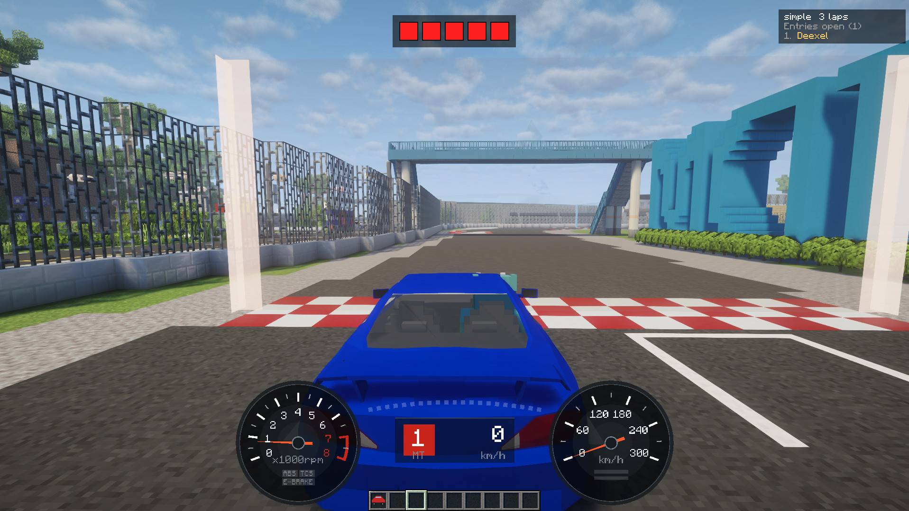

Host and join with one key. Set a regulation, line up, and go.主催も参加も、キー 1 つで。レギュレーションを決めて、並んで、スタート。
Everything after the course is done from the race screen, opened with K. No commands needed.コースを作ったあとは、すべて K で開くレースの画面から。コマンドはいりません。
An OP marks a start line and checkpoints with /kuruma-admin. Once per world.OP が /kuruma-admin でスタートラインとチェックポイントを置きます。ワールドごとに 1 回だけ。
Press K with no race open. Pick the course and laps, set the regulation and press Open race. You are entered too.レースが無いときに K。コースと周回を選び、レギュレーションを決めて「レースを開く」。主催者も自動で参加します。
An invite pops up at the right edge for everyone in the world. Press K to join. Press K again to see the race and who is in.ワールドにいる全員の画面の右端に参加の案内が出ます。K で参加。もう一度 K を押すと、レースの内容と参加者を確認できます。
The host presses Start. Cars are held still under the lights (you can still steer). Lap 1 starts on GO.主催者が「スタート」を押します。シグナルの間は車が止まります（ハンドルは切れます）。GO と同時に 1 周目の計測が始まります。
The host picks which limits apply. Unticked limits are ignored. Hover a rule on the host screen to see what it measures.使う条件を主催者が選びます。切った条件は見ません。主催者画面で条件の名前にカーソルを乗せると、何を測るかが出ます。
| Rule条件 | What it measures何を測るか |
|---|---|
| Base traits車の素性 | Locks size (wheelbase, track, tyre radius), drivetrain efficiency, rolling resistance, drag, shift time, engine inertia and tyre traits other than μ to the car's own values. Changing any of these only ever makes a car faster, so the host can fix them all at once or one by one.車の寸法（ホイールベース・トレッド・タイヤ半径）、駆動の効率、転がり抵抗、空気抵抗、変速の時間、エンジンの慣性、タイヤの性質（μ 以外）を、車種の値に固定します。どれも変えるほど速くなるだけの値なので、まとめて、あるいは 1 つずつ固定できます。 |
| Max power最高出力の上限 | Peak power in PS, measured with the turbo at full boost and parts included.最高出力（PS）。ターボはブーストが乗りきった値で、パーツ込みで測ります。 |
| Min weight車重の下限 | Car weight in kg, without the driver.車重（kg）。乗員は含みません。 |
| Min power-to-weightパワーウエイトレシオの下限 | Weight ÷ max power (kg/PS): how many kg each PS has to move. Lower is quicker. Use it to even cars out by the ratio alone. 1,200 kg with 240 PS is 5.0.車重 ÷ 最高出力（kg/PS）。1 PS あたり何 kg を運ぶかで、小さいほど加速が鋭くなります。出力と車重を別々に縛らず、比だけで揃えたいときに。1,200 kg・240 PS なら 5.0 です。 |
| Max gripグリップの上限 | Tyre grip (μ) on tarmac, tyre parts included.舗装路でのタイヤのグリップ（μ）。タイヤのパーツ込み。 |
| Max downforceダウンフォースの上限 | Downforce at 200 km/h, front and rear added together, aero parts included.200 km/h のときのダウンフォース（前後の合計）。空力のパーツ込み。 |
| Drivetrain駆動方式 | Which of FF, FR and 4WD may enter.FF・FR・4WD のうち、どれで出られるか。 |
| Forced induction過給機 | Whether a turbo may be fitted.ターボを付けてよいか。 |
| Driving aids運転補助 | Whether traction control (TCS) and ABS may be used.トラクションコントロール（TCS）と ABS を使ってよいか。 |
The server checks every entrant's car with the same maths the client uses. The host sees each car's numbers, with the ones out of range in red.サーバーが全員の車を、クライアントと同じ式で判定します。主催者には各車の値が並び、外れている値は赤で出ます。
Anyone still in breach when the lights come on watches instead. Leave the regulation mid-race and you are disqualified.スタートシグナルが点いた時点で違反している人は観戦になります。レース中にレギュレーションを外れると失格です。
OPs save regulations as named presets on the server. Anyone can pick and load them on the host screen.OP はレギュレーションに名前を付けてサーバーに保存できます。選んで読み込むのは誰でもできます。
From the moment you enter until you finish, the setup screen (G) will not let you leave the regulation.エントリーしてからゴールするまで、セッティング画面（G）ではレギュレーションを外れる値にできません。
Position, name and gap to the leader for everyone, live.全員の順位と、トップとの差をリアルタイムで表示します。
Lap time, gap to your best at the last checkpoint, checkpoint progress, last and best lap.現在のラップタイム、直前のチェックポイントでの自己ベストとの差、チェックポイントの通過状況、前周とベストラップ。
Checkpoint deltas, personal best laps, final lap, and a clear reason when a lap does not count.チェックポイント通過時のタイム差、自己ベスト更新、ファイナルラップ、周回が無効になったときの理由。
Cross any start line to start timing on your own. The tower turns into your sector times with the gap to your best in each, and your best lap runs beside you as a ghost.どのスタートラインでも、越えれば 1 人で計測が始まります。塔は区間タイムと区間ごとの自己ベストとの差に変わり、ベストの走りがゴーストとして隣を走ります。
Courses are built with commands. Everything else can also be done from the K screens.コースはコマンドで作ります。それ以外は K の画面でもできます。
/kuruma-admin point/kuruma-admin course create <name>/kuruma-admin course checkpoint <name>/kuruma-admin course laps <name> <laps>/kuruma-admin collide [true|false]/kuruma race open|join|leave|start|stop/kuruma best, /kuruma best top <course>Find races and share regulations on Discord.Discord でレースの告知やレギュレーションを共有できます。